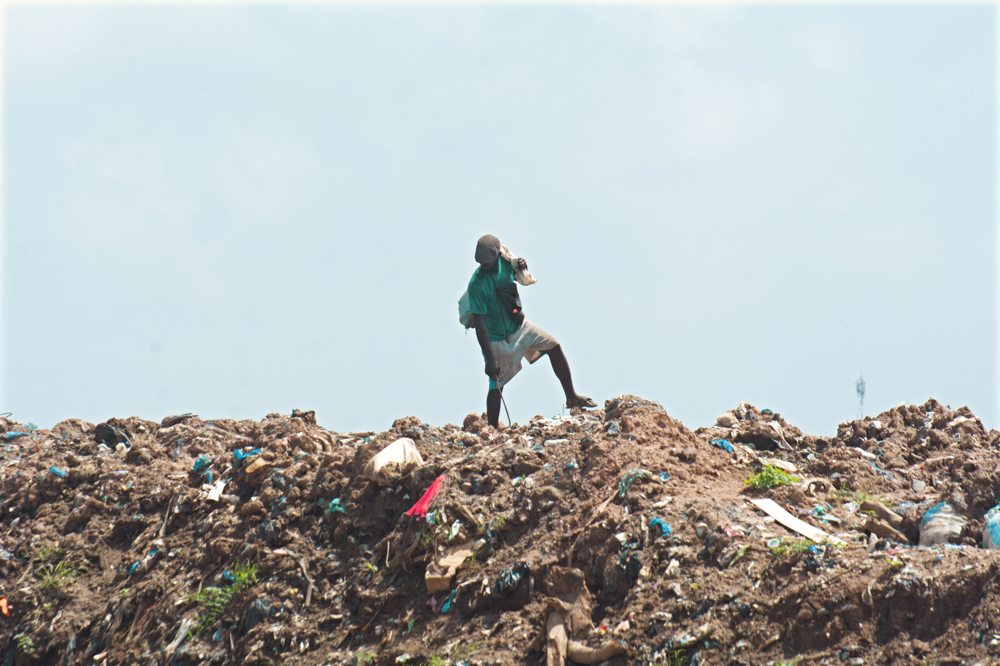
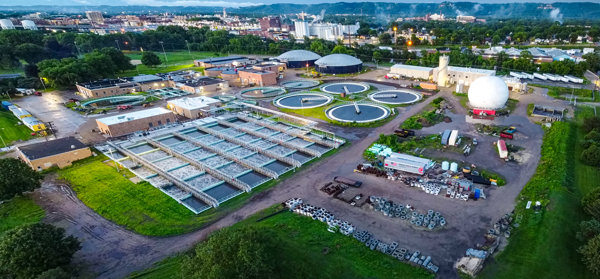
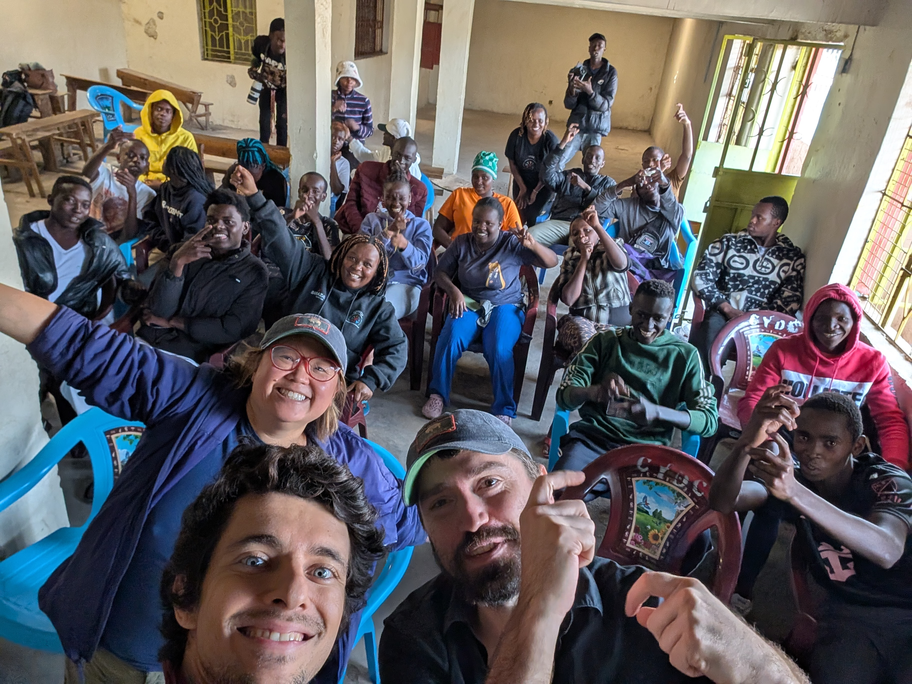

Protect people first
Restrict minors' access to the dumpsite and provide protective gear for people working there.
SAFER WORKA Minecraft vision for Dandora, Nairobi
What if a dumpsite could become a place where young people find safety, skills, and a future?
A project by Ramzy · Community, health & opportunity
Poor dumpsite management reaches far beyond waste. Smoke and pollution put community health at risk, while children can be drawn away from school and young people face unemployment and drug-related harm.
Ramzy's Minecraft project brings these connected challenges into one shared vision: make the area safer, restore green space, and create real paths to learning, support, and work.
A safer, greener community hub where environmental repair and youth opportunity reinforce each other.
A real art-workshop reference for Ramzy's creativity center, where young people can paint, exhibit, and sell their work.

Ramzy's proposed creativity center will support painting, exhibitions, and sales in Dandora.
Restrict minors' access to the dumpsite and provide protective gear for people working there.
SAFER WORKCreate green space, reduce pollution, and build a water recycling center to support cleaner resource use.
GREEN SPACE · WATERInstall solar panels and develop skills and employment opportunities in the solar sector.
SOLAR · SKILLSOpen community offices that offer mental health support to young people affected by drug use.
CARE · COMMUNITYBuild a recycling center that creates employment pathways for young people.
RECYCLING · JOBSCreate a creativity center where young people paint, exhibit, and sell their work in the CBD and beyond.
ART · ENTERPRISE

Drug use can affect young people, their families, and their ability to stay connected to school and work. Ramzy's proposal includes welcoming community offices where youth affected by substance use can ask for help privately and be treated with dignity.

Talk with a trained mental-wellness counselor in a private, welcoming space.
Connect to appropriate health and recovery support through trusted local services.
Get help reconnecting with school, creative activities, and pathways into work.
A proposed community service in Ramzy's Minecraft vision, not a claim that a clinic is already operating.
The project describes a future where children can focus on school and young people can build skills, find support, and earn a living.
With minors kept away from the dumpsite, children can attend school more consistently and pursue their future careers.
Recycling and solar initiatives create routes for young people to gain experience and access employment.
A place to make and sell paintings opens a practical market for youth creativity in Nairobi's CBD and other areas.
Mental health support and safer working conditions put wellbeing at the center of the community plan.
Outcomes described in the project presentation; no impact figures have been added.
TURNING WASTE INTO HOPE
The total equals the female and male category values combined.